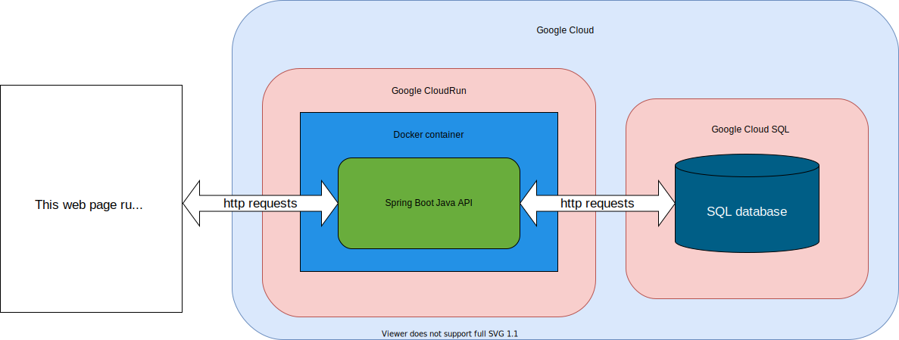
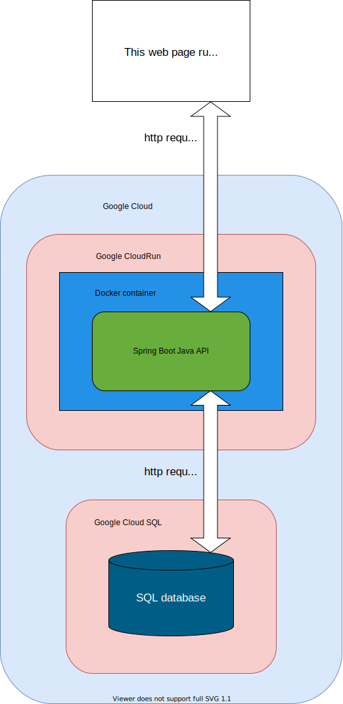

This page might not look like much, but what lies beneath is key: its purpose is to demonstrate its backend architecture. The frontend uses javascript async/await functions to make requests of a custom API program that I built. The program was made in Java using Spring Boot, with separate Controller, Service, Entity, Repository and Payload classes. The finished program was then containerized with Docker and instantiated as a service on Google Cloudrun. The API program connects to an SQL server which runs on Google Cloud SQL to store the cat names and occupations list.
See the Java code on GitHub  The Java-API receives all requests at the same endpoint. To retrieve a list of all of the records stored in the database, a GET request is made. It is not necessary to include anything in the body of the request. Functionality to retrieve a single record by ID was not implemented as it is unnecessary for this demonstration.
To enter a new record in the database, a POST request is made including a body object (JSON formatted) containing the key-value pairs of "name" and "occupation". An id is automatically assigned to the record by the Spring Boot program because of the annotation "@GeneratedValue(strategy = GenerationType.IDENTITY)" included in the CatnamesEntity.
To delete a record, a DELETE request is made to the API endpoint with a JSON-formatted object in the request body containing the "id" key and the id value of the record to be deleted.
Because the API is hosted at a different domain than the frontend page, it was necessary to deal with CORS rules. The annotation @CrossOrigin(origins = "https://nickroach.github.io/", maxAge = 3600) was included in the CatnamesController to take care of this. The API will only fulfill requests made by browsers running javascript programs running at that domain.